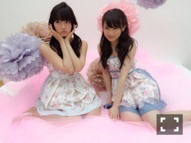
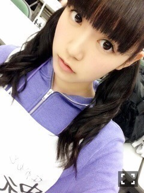

| 2015/06 30 Tue | ひめたん-0o0-その551 |
舞台「じょしらく」
無事千秋楽を迎えました！！
会場に来てくださったみなさん
映画館で観てくださったみなさん
本当にありがとうございました( ˇωˇ )

飛鳥ちゃんのおでこ
今回の「じょしらく」は
乃木坂にとって挑戦だったと思います
ひとりひとりが役を頂いて
5人だけで舞台を創り上げる
それも原作のあるストーリーを。
演者として舞台に立つというのが
個々ではあったかもしれないけれど
みんなで取り組んだのは初めてのこと。
かずみんがドラマ・万理華が舞台挨拶で
欠席な時は、全部私がカバーしなきゃ
と思って取り組んできました。
そして最後に少しだけ
お話しましたが、体調が良くなくて
お稽古を長く休んだことがありましたが
その時に励ましてくれた
まっちゅん、ゆったん......
そこにチームの壁なんてなかったような
気がします。
もちろん、
同じチーム「ご」のみんなはもう特別で
それはカーテンコールでお話したことが全て。
私を必要としてくれる仲間がいて、
その仲間と一緒に舞台に立てたことが
幸せでした。
毎公演ごとに反省会をするときに
何を言っても良しとする雰囲気が
私はすごく好きでした。
美彩先輩、愛未、あすかりん、きいちゃん
たくさん助けてもらいました
本当にありがとう( ´•̥ω•̥` )♡
そして、今回の舞台携わってくださった
スタッフの皆様にも
感謝の気持ちでいっぱいです！
私たちに最高の環境を準備してくださって
アイドルでなく演者として指導してくださって
明るく楽しい現場で、居心地が良かったです。
たくさん迷惑をかけてしまいましたが
その分舞台の上で少しでも
なにかパワーを届けられていたらいいな。
演出家の川尻さんが
最後にかけてくださった言葉は私の宝物。
私がこれからアイドルをしていく上で
もっともっと磨きをかけて
強みにしていきたいと思いました(´｡･v･｡｀)
最後に、何より
今回の私たちの挑戦を見届けてくださった
ファンのみなさん！！
バースデーライブで発表されてから
私たちメンバーもだけど、みなさんにも
ドキドキさせちゃったんじゃないかな？
大丈夫かな～とか、がんばれ！とか
あたたかい言葉に背中を押されて、
おかげでこうして素敵な経験を
させてもらえたよo(^▽^)o
劇場や映画館に来てくれて、
日記にもたくさん感想書いてくれてて
それがまたパワーになりました！
本当に ありがとうございました♡♡
手寅ちゃんは私と似ているところが
あるような気がしていて
お稽古中も「よーい、はい！」の一言で
すんなり手寅ちゃんになれました
誰に対しても優しくて、ノリが良くて、
いつも周りをよく見てて、機転が利いて
みんなから慕われる手寅ちゃん
本当に素敵。大好きです。
私は手寅ちゃんほどノリ良くないので(笑)
ひめたんってこんな顔するんだーって
びっくりした方もいるかもしれませんが
彼女のコロコロ変わる表情が
私は彼女の魅力の一つだと思ったので
少しでも近づけていたら嬉しいな( ˇωˇ )
そしてパラレルワールドの中の
アイドル・ひめたん。
これもあくまで悩んでいるアイドルを
演じているつもりだったんだけど
千秋楽のラストシーンでは泣いてしまいました
切り離していたつもりだったのに
なぜか力んじゃったなあ～
どれだけの人の心を動かせたのかは
私にはわからないけれど
あんな重みのある台詞を噛み砕いて
伝えるだけの説得力があるような人に
なりたいなと思いました......♡
さて、ここからはアイドルとして
日記を書きます。笑
ごめんね今日長くて。
「FLASHスペシャル」発売中です！
真夏さんとひめたんの
お馴染み必殺技コンビが
なんとグラビアで対決しちゃいました♡
最後にはユニット結成しよう！って話にも。
いやはや......実現できたらいいなぁ

そして12thアンダー曲
「別れ際、もっと好きになる」
沈金で音源解禁されました(´｡•ω•｡`)
センターは未央ちゃんです。
私は前作でアンダーセンターを経験して
学んだことを次に伝えたいと
思っていましたが
未央ちゃんはすでに
みんなの一番真ん中に立っていて
センターの景色を知っている......。
なんと頼もしい(´,,•ω•,,｀)
「支える」なんて私が言うには
おこがましい話かもしれないですが
今回は未央ちゃんにとって初めての場所
センターでも全然違うと思うから
困ったときにはそっと
手が差し出せる距離にいたいな。
12thアンダーとしての活動は
きっとこれからなんだと思うけれど
今回、今までと比べて
ガラッと雰囲気が変わったなというのが
私の体感としてあります。
乃木坂はまだまだこれから！
この作品を通して
そう思っていただけるよう頑張ります( °ω° )

ええ、そして、
「鳥居坂46」という
新プロジェクトも発表されましたね
きいちゃんがキグちゃんの格好で
私も先輩になれるんですかねぇ能條さーん？
って言ってたのがもう可愛かった......♡
鳥居坂って、あの、
ブルーシアター行く途中の
ちょっとだけ急な坂だよね～
乃木坂との関係性とか
詳しいことは私たちにもよくわからないけれど
バースデーライブのあの時
漠然と決まっていたことがようやく
動き出した。そんな気がします。
乃木坂ちゃんも大きくなったんだね( ´•̥ω•̥` )
私もまだまだ頑張らなければ！
れなちさんお疲れ様でした♡
受験応援してます！
みんなついてるよ！

日記にじょしらくの感想もたくさん
読みました！ありがとう♡
(＊´・ω・＊)
コメント(775)
2015/06/30 23:24